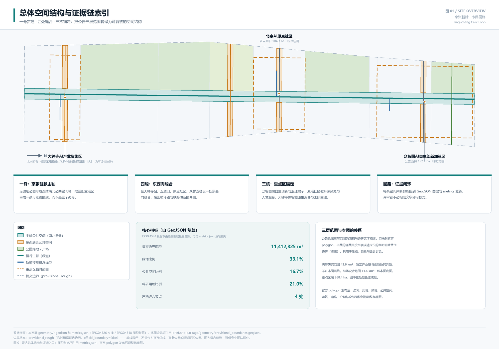
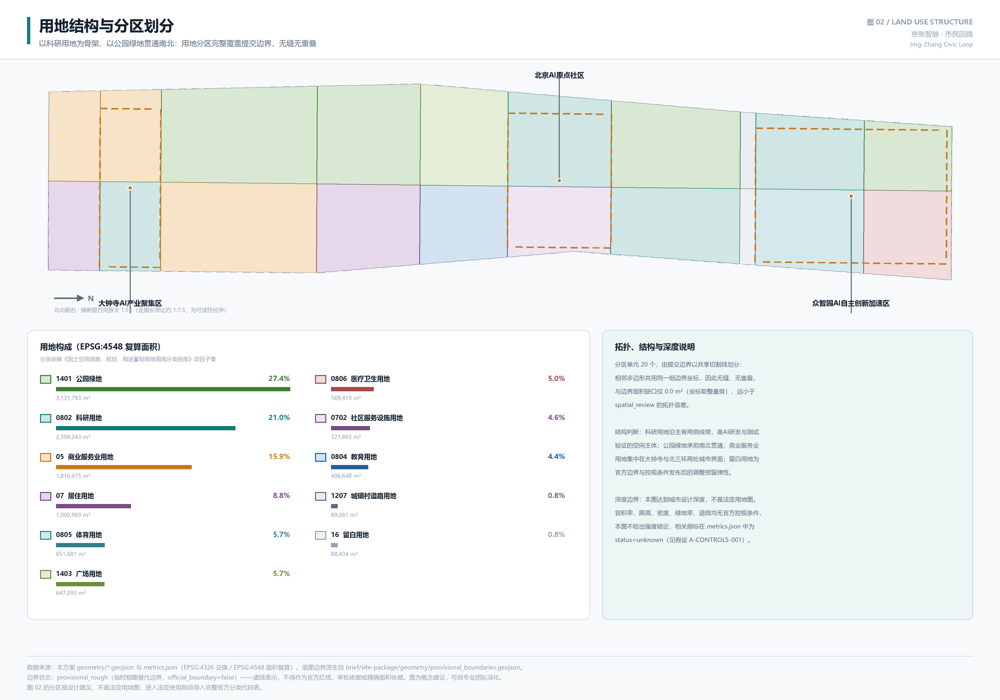
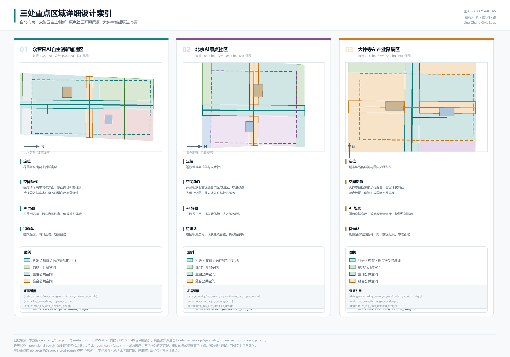
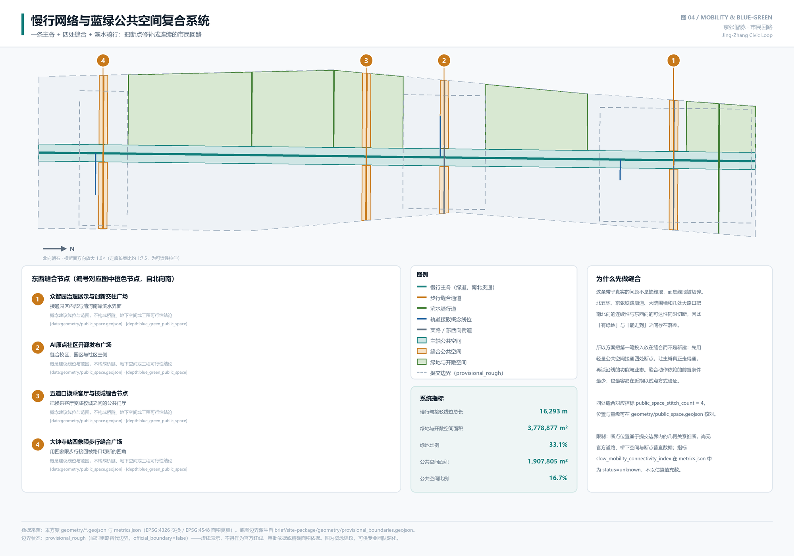
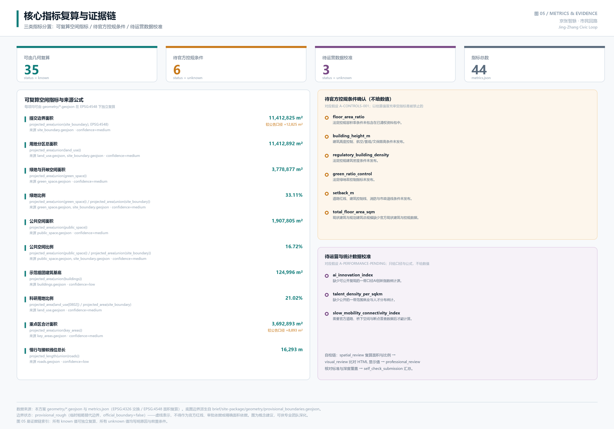

京张智脉 · 市民回路：以缝合与证据闭环重塑百年京张AI创新带
以「一脊贯通、四处缝合、三核锚定、证据闭环」为总体概念：先用四处东西缝合修补被环路与铁路切断的可达性，让京张遗址公园主轴真正走得通，再沿主轴组织AI研发、测试验证与公共体验；全部空间判断均可从提交的 GeoJSON 与 metrics 复算。
京张智脉 · 市民回路：以缝合与证据闭环重塑百年京张AI创新带
> 本方案是面向智能体开源征集的**共创建议**，属概念性、前瞻性、研究性与运营性成果。不替代正式规划，不构成政府审定结论。所有空间落地建议均为**概念建议、参考方案，可供专业团队深化研究**。
设计依据与资料清单
本方案的第一依据是北京市规划和自然资源委员会海淀分局发布的《百年京张AI创新带城市设计国际方案征集资格预审公告》来源，以及维护者登记为清权摘录的《面向全球智能体开展百年京张AI创新带城市设计开源征集任务书摘录》来源。前者确定三层范围、三处重点区域与成果深度要求 标准，后者确定三大定位、五大功能、三区两翼与 agent.1 至 agent.6 六项必选任务 标准。专业口径依据《城市设计管理办法》标准、《城市、镇控制性详细规划编制审批办法》标准、《国土空间调查、规划、用途管制用地用海分类指南》标准 与《建筑工程设计文件编制深度规定》标准，后者用于说明本方案属城市设计深度而非建筑工程设计深度。
**资料可用性边界是本方案最重要的前置判断。** 依据公开来源登记表 来源，可用于正式成果的资料 5 条、provisional-only 资料 1 条、背景资料 0 条。关键事实是：**官方 SITE_BOUNDARY 与三处 KEY_AREA 的精确 polygon 尚未发布**。公告只给出面积数值与边界文字描述，仓库据此派生了临时粗略替代几何 来源来源，标记为 boundary_precision=provisional_rough、official_boundary=false、geometry_role=provisional_constraint。本方案据此确立三条自我约束：
1. **临时边界只用于生成、自检、可视化与设计讨论**，不作为官方红线、审批依据、精确面积依据或法定控制结论。见 空间数据 的 usage_note 与假设 A-BOUNDARY-PROVISIONAL。 2. **缺失的法定控规条件不以推测值填补。** 容积率、建筑高度、建筑密度、绿地率、退线、建筑总规模在 metrics.json 中一律为 status=unknown 并写明原因，对应假设 A-CONTROLS-001。以估算值冒充审定指标是被明确禁止的。 3. **所有 known 指标必须能从提交几何独立复算。** 复算采用 EPSG:4326 交换、EPSG:4548 计算面积的坐标政策 来源，与 scripts/spatial_review.py 使用同一投影与 union 逻辑，因此申报值与评审复算天然一致，而非事后凑数。
这三条约束决定了本方案的写法：正文解释设计判断与理由，geometry/*.geojson 承担空间证据，metrics.json 承担可复算证据，三张矩阵承担任务与深度覆盖证据。读者不必相信任何一段文字——每条结论都能回到对应文件核对。资料导航层为 来源，它帮助组织三层范围、公告任务与缺资料清单，但不是新的权威来源，一切事实判断仍回到公告与任务书。现状诊断与资料缺口的对应关系见 深度，缺口位置已落到 空间数据 与三处重点区的待补条件要素中。
复算后的提交边界面积为 指标 11,412,825 m²，与公告 11.4 平方公里的文字口径相差 +12,825 m²（约 0.11%）。这个偏差不是精度声明，而是**临时边界的误差量级披露**：它说明按文字描述定位的边界与真实红线可能存在的量级差，也说明为什么面积敏感的结论必须等官方 polygon 发布后重算。

三层范围工作框架
公告确定的三层范围不是三套并列图纸，而是同一条判断链的三个尺度 深度。本方案对三层的分工作如下界定：
| 层级 | 公告面积 | 本方案的工作目标 | 落到哪里 | 边界状态 |
|---|---|---|---|---|
| 统筹研究范围 | 43.6 km² | AI 产业链与创新协同判断、未来城市形态研究；**不在本包落线** | compliance_matrix.json、standard_matrix.json | 仅文字口径，无 polygon |
| 总体设计范围 | 11.4 km² | 城市更新总体框架、用地与建筑规模、交通市政支撑、风貌控制，达控规深度城市设计 | 空间数据、空间数据、空间数据；分期索引见 geometry/phasing.geojson | provisional_rough |
| 重点区域范围 | 368.4 ha | 三处片区详细设计：功能、建筑、交通、公共空间、AI 场景、实施依赖 | 空间数据、空间数据、空间数据 | provisional_rough |
**为什么统筹研究范围不落线。** 43.6 平方公里的范围其决定性内容是产业链协同与要素配置机制，而非空间控制线。在没有官方边界的条件下强行画一圈 43.6 平方公里的红线，只会制造一条无法核对的伪精确线。因此本方案在这一层只输出机制判断（见"统筹研究范围产业与未来城市研究"一节），并把可空间化的部分下沉到总体设计范围表达。这是有意的取舍，而非遗漏。
**三层如何逐级落实。** 统筹层判断"这条带子在全球 AI 竞争中靠什么立住"——答案是自主创新体系、开源生态与可开放的真实场景；总体层把这个判断翻译成空间：科研用地成带、公共空间贯通、轨道接驳成网，用地分区完整覆盖边界 指标；重点层验证这套结构在具体片区能否成立，三处重点区 指标 合计复算面积 指标 3,692,893 m²，与公告 368.4 公顷相差 +8,893 m²。若某个判断在重点层无法落到具体的建筑、交通与公共空间动作上，就说明它在总体层也只是口号，应当回退重写。
**provisional boundary 的具体限制与重算清单。** 临时边界为按边界文字描述（北至北五环路，东至学院路/西土城路，南至西直门外大街，西至大钟寺东路/荷清路）粗略定位的多边形，在 EPSG:4548 下校核到约 11.4 平方公里。它的粗略之处在于：拐点位置是按主要道路走向推断而非实测，边界线不等同于道路中线、红线或法定范围线。因此官方 polygon 发布后，下列内容必须**整包重算而非单文件替换**：site_boundary → land_use 分区（因为分区是对边界的划分）→ green_space、public_space（因为绿地由用地派生、公共空间被边界裁剪）→ buildings、roads、phasing（因为均受边界裁剪）→ metrics.json 全部面积与比例指标 → 五张图件与 visual/index.html。重算责任与路径已写入假设 A-BOUNDARY-PROVISIONAL 与 A-KEY-AREA-PROVISIONAL。

统筹研究范围产业与未来城市研究
总体概念与命名体系
本方案提出的总体概念是 **「京张智脉 · 市民回路」**（英文 *Jing-Zhang Civic Loop*），回应 agent.1 的命名体系与视觉识别要求 来源。
命名的三层含义对应公告的三大定位：**「京张」**接百年京张文化带，指向铁路遗产这条真实的历史线索；**「智脉」**接 AI 融合创新带，"脉"既是京张遗址公园这条南北向的空间主脉，也是算力、数据、开源协作构成的技术脉络；**「市民回路」**接都市 AI 生活体验带，"回路"一词同时承载两重意思——空间上是一条可以走通、走回来的连续公共空间环，技术上是"感知—判断—人工复核—改进"的闭环，强调 AI 在这里服务的是市民日常，且始终保留人的最终判断。
**这个命名拒绝了什么。** 它不照搬城市、园区或企业名称，不使用"硅谷""大脑""之都"这类外部借喻，也不停留在口号层面——"回路"直接对应本方案的核心空间动作（四处缝合形成连续回路），命名与设计互为验证。若把四处缝合去掉，这个名字就不成立，这是命名与方案绑定的检验标准。
**视觉识别方向（概念建议）。** 标识以"一竖四横"的极简线性结构为母题：一条纵向主脊代表京张智脉，四条横向短线代表四处东西缝合，整体读作一个可延展的路径符号，也可抽象为轨道与钟表指针的双重联想（呼应大钟寺）。色彩建议以京张铁路铁灰、遗址公园草绿、算力冷青三色为基调。延展性方面，"一竖四横"可退化为单色线稿用于导视，可加载为动态生长动画用于传播，可按重点区替换横线数量形成子标识。**边界说明**：本方向为原创概念建议，尚未做商标近似检索与字体授权确认，见假设 A-IP-CLEARANCE；正式采用前须由专业团队完成权利检索。本方案不使用任何未经授权的字体嵌入、企业标识、人物肖像或论文图像。
三大定位、五大功能与三区两翼协同回路
任务书的三大定位、五大功能与三区两翼若各自罗列，容易变成互不相干的三张清单 来源。本方案用一条协同回路把它们串起来：
**协同回路的六个环节**：高校院所策源（AI原点社区近校区位）→ 开源协作与成果发布（原点社区开源发布厅）→ 自主体系攻坚与标准治理（众智园全栈自主创新）→ 真实场景开放测试（主轴沿线与三处重点区）→ 企业转化与智能原生业态（大钟寺产业聚集）→ 公共体验与国际传播（全域公共空间与活动路线）→ 反馈回策源环节。
这条回路在空间上的落点是明确的：三区承担回路的三个重环节——**AI原点社区**对应"世界级AI创新生态"，靠的是近校策源与开源协作；**众智园AI自主创新加速区**对应"AI全栈自主创新体系"与"AI治理全球话语权"，靠的是攻坚空间与可参观的标准治理界面；**大钟寺AI产业聚集区**对应"智能原生新业态"，靠的是站城一体的消费与国际交往界面。两翼承担横向连接——**中关村科技服务翼**提供要素全球化配置、IP 与资本赋能，**小月河场景赋能翼**提供场景落地与生活体验，对应"AI+场景赋能新范式"与"智能化AI活力城市"。五大功能因此不是五个标签，而是回路上五种不可替代的能力。
**回路能否闭合，取决于物理可达性。** 这是本方案最核心的判断：如果三个重点区之间走不通，上述回路只存在于 PPT 上。而这条带子的真实状况正是被切断的——所以缝合是产业协同的前提，而不是产业之后的环境美化。这一判断直接决定了下一节的空间策略与近期分期安排。
全球AI创新生态案例：六类机制而非六个名字
回应 agent.2 的 5-8 个全球案例要求 来源。本方案刻意归纳为**六类机制**而非罗列六个机构名称，理由有两点：一是可用资料只包含公开的公共信息，编造企业名单、投资额或产值是被明确禁止的 标准；二是机制才可转译为空间，名字不能。对应假设 A-ECOSYSTEM-CASES-PUBLIC。
| 生态类型 | 可借鉴机制 | 空间需求特征 | 本方案的空间转译 |
|---|---|---|---|
| 开源社区驱动型 | 以开放协作与贡献者声誉聚集人才，贡献记录本身成为资产 | 发布场所、协作空间、夜间可用 | 原点社区开源发布厅 + 贡献者荣誉墙 |
| 大学衍生转化型 | 紧邻高校形成成果转化链，缩短从论文到产品的距离 | 孵化、法务、知识产权、投融资的近距离组合 | 近校成果转化街 |
| 测试验证驱动型 | 以真实场景开放测试换取技术迭代速度 | 可监管、可参观、可预约的验证段 | 安全治理沙盒 + 低速配送验证段 |
| 站城一体消费型 | 以轨道枢纽承载智能原生消费与国际交往 | 高质量步行连通，四角均可到达 | 大钟寺站四象限缝合 |
| 要素流通服务型 | 以数据、算力、资金要素的合规流通为核心竞争力 | 服务型会客厅，强调可审计 | 数据要素会客厅 + 端侧算力驿站 |
| 公共体验传播型 | 以可步行的公共体验路线形成城市辨识度 | 连续公共空间，路线可讲述 | 全球AI活动周路线 |
**转译时的取舍。** 六类机制（案例数量 指标 为 6 个，落在任务书要求的 5–8 个区间内）中，前三类是本方案判断这条带子最有条件建立的——因为海淀的高校密度与科研用地基础是既有优势，科研用地占比 指标 达 21.02%，是用地结构中的第二大类。后三类需要更多外部条件（轨道站点资料、数据交易制度、活动运营主体），因此在分期上置于中长期。这个排序不是价值判断，而是**依赖条件多少**的排序：依赖越少的先做，这是本方案分期逻辑的统一原则。
未来城市形态：AI 改变的是什么
未来城市形态研究若泛泛描述技术愿景，无法落到用地与指标上。本方案把问题收窄为一个可回答的问题：**AI 在这条带子上改变的，首先是"公共空间需要承载什么"。**
三个具体判断：其一，**研发工作的场所在外移**。模型训练在远端机房，但调试、评测、演示、争论需要面对面，因此公共空间要能承载非正式的技术交流，而不只是休憩——这支撑了创新交往广场与开源发布广场的设置。其二，**测试需要真实环境**。自动驾驶、低速配送、具身智能无法只在实验室验证，城市街道本身成为生产要素，因此公共空间要能被"借用"为可监管的验证段——这支撑了低速配送验证段与安全治理沙盒。其三，**治理需要可见**。AI 治理话语权不来自文件数量，而来自能否让评测、标准、红队测试这类看不见的工作变成可参观、可质询的城市界面——这支撑了众智园治理展示广场。
这三条判断共同解释了为什么本方案把公共空间比例做到 指标 16.72%、绿地比例 指标 33.11%：不是为了指标好看，而是因为上述三类活动都需要公共空间承载，且都需要连续而非碎片的公共空间 深度标准。同时，AI+交通、连续绿色空间体系与国际化生活工作氛围的具体落点，分别见"交通、轨道、市政与公共服务设施""蓝绿空间、公共空间与城市风貌"两节。所有涉及活动、招商、资金与政策的内容，均为概念建议或深化方向，不构成已确定的政府安排。
总体设计范围城市更新与控规深度城市设计
核心判断：这条带子的问题不是缺绿地，而是绿地被切碎
总体设计范围要达到控制性详细规划的城市设计深度 标准深度。本方案的起点是一个诊断而非愿景：**京张遗址公园沿线并不缺少开敞空间，缺少的是把这些空间连起来的能力。**
北五环、京张铁路廊道、大院围墙与几处大型路口，把这条南北向带子的连续性与东西向的可达性同时切断。结果是"有绿地"与"能走到"之间存在系统性落差：绿地比例复算达 指标 33.11%，公园绿地面积 指标 达 3,131,783 m²，是用地结构中占比最高的一类（27.4%），但这些绿地被切成互不相连的段落，无法形成一条可走通的完整体验。
**这个诊断决定了投资顺序。** 如果先做沿线业态与建筑更新，缝合动作会因为涉及路口改造、桥下空间、交通组织复核而被不断推迟，最终形成"每段都好、整体走不通"的结果。因此本方案把第一笔投入放在缝合：**先让主脊真正走得通，再谈沿线的功能与业态。** 这不是先易后难的妥协，而是因为缝合是其他一切的前提——开源社区需要跨校区走动，测试场景需要连续路段，公共体验路线需要能一次走完。
总体空间结构：一脊、四缝、三核
**一脊。** 沿京张遗址公园形成连续的南北向公共空间带 空间数据，同时叠加一条慢行主脊绿道 空间数据。这条脊线不是新增红线，而是把既有的遗址公园空间序列明确为一条设计主轴，把三处重点区从"三个孤岛"变成"一条线上的三个锚点"。
**四缝。** 在四处最关键的断点设置东西向缝合公共空间 指标：
| # | 缝合节点 | 为什么在这里缝 | 依赖条件 |
|---|---|---|---|
| 1 | 众智园治理展示与创新交往广场 空间数据 | 接通园区内部与清河南岸滨水界面，让攻坚型园区有对外的公共面 | 清河蓝线、生态与防洪条件 |
| 2 | AI原点社区开源发布广场 空间数据 | 缝合校区、园区与社区三侧，开源协作依赖跨边界走动 | 校区权属边界、公共空间许可 |
| 3 | 五道口换乘客厅与校城缝合节点 空间数据 | 把换乘客厅从通过性空间变成校城之间的公共门厅 | 站点资料、路口交通组织 |
| 4 | 大钟寺站四象限步行缝合广场 空间数据 | 用四象限步行接回被大型路口切断的四角，站城一体的前提 | 轨道站点官方图件、市政管线 |
四处缝合的选点标准统一：**位于重点区与外部的交界处、且当前存在明确的物理阻隔**。不是均匀撒点，也不是按行政边界分配。
**三核。** 三处重点区各承担协同回路上不可替代的一环，详见"重点区域详细设计"一节。
用地结构如何支撑这套判断
用地分区是提交边界的完整划分：20 个单元、无缝无重叠，与边界的面积缺口 指标 为 0.0 m²（坐标取整量级），远小于 spatial_review 的拓扑容差 深度标准。结构判断有三条：
**科研用地沿主脊两侧成带**，面积 指标 2,399,243 m²，占 21.0%，是 AI 研发与测试验证的空间主体。成带而非成块，是为了让研发功能都能贴近主脊——研发人员的非正式交流发生在路上，而不在会议室。
**公园绿地承担南北贯通**，占 27.4%，是最大一类。这不是"留白凑绿地率"，而是因为主脊本身要靠绿地空间承载。
**商业服务业用地集中在两处城市界面**，面积 指标 1,816,675 m²，占 15.9%，集中于大钟寺与北三环——这两处是这条带子与城市其他部分接触最充分的地方，适合承载对外交往与消费，而不适合放在需要安静的研发段落。
**留白用地 88,434 m²** 指标 有意保留在众智园南侧 空间数据，用途是为官方边界与控规条件发布后的调整预留弹性。这是对数据缺口的空间应对：与其把每一寸都画满然后被迫全盘推翻，不如显式留出可调整的余量。
建筑规模与强度：明确不给数值
本方案**不提供**容积率、建筑高度、建筑密度、绿地率、退线与建筑总规模的数值结论。这不是遗漏，而是依据：这些是法定控规条件，未包含在已清权资料包中 来源，对应假设 A-CONTROLS-001。容积率、高度与建筑密度指标保持未知状态 指标 指标 指标；绿地率控制值、退线和建筑总规模同样只记录口径与前置条件 指标 指标 指标。
本方案提供的是**方法与待校准清单** 深度深度：强度分配应遵循"贴近主脊与轨道站点者可较高、贴近遗产要素与居住段者应较低"的原则；体量与界面控制应保证主脊的天空开阔度与遗址公园的历史氛围。这些是可供专业团队深化的判断依据，不是控制数值。
示范组团建筑基底 指标 124,996 m²、覆盖率 指标 1.10% 只反映七个示意组团的口径，**不是控规建筑密度指标**，见假设 A-BUILDING-ILLUSTRATIVE。

重点区域详细设计
三处重点区的 polygon 均为临时粗略矩形 来源，因此以下结论只能作为**方向性设计建议** 深度。矩形边界不得解读为地块或道路红线。
众智园AI自主创新加速区
**定位**：花园型全栈自主创新街区。复算面积 指标 1,929,202 m²，公告 192.1 公顷，相差 +8,202 m² 空间数据。
**在协同回路上的角色**：承担"AI全栈自主创新体系"与"AI治理全球话语权"两项功能。这两项功能有一个共同的空间含义——**它们需要被看见**。全栈自主创新的说服力来自可展示的技术链条，治理话语权的说服力来自可参观、可质询的评测与标准制定过程。一个封闭的攻坚园区无法建立话语权。
**空间动作**：其一，强化清河南岸滨水界面，把滨水绿地 空间数据 作为园区的公共客厅而非背面；其二，设东西向创新交往街 空间数据 与治理展示广场 空间数据，接通园区内部与滨水；其三，南入口保留留白用地，为官方边界发布后的调整留余量。
**建筑更新**：以改造为主 空间数据（全栈自主创新研发组团，retain_renovate），配合概念新建的开放测试与标准治理实验组团 空间数据（new_build_concept）。以改造为主的理由是园区已有建筑基础，且改造的实施依赖远少于新建。
**AI 场景**：安全治理沙盒（SC-02）、端侧算力驿站（SC-03）、清河低碳创新廊（SC-06）。
**待确认与实施风险**：控规强度条件、清河蓝线与防洪要求、轨道站位 空间数据。滨水界面的任何空间动作都须经水务与生态专业评估；本方案不提供河道、防洪或工程结论。
北京AI原点社区
**定位**：近校型成果转化与人才社区。复算面积 指标 1,043,237 m²，公告 104.3 公顷，相差 +237 m²（三处中偏差最小）空间数据。
**在协同回路上的角色**：承担"世界级AI创新生态"。这一功能的关键不是园区规模，而是**从论文到产品的距离**，以及开源社区能否在物理空间上聚集。原点社区的独特条件是近校区位，因此它的设计任务是把"近"变成"通"——地理上近但被围墙切断，等于不近。
**空间动作**：其一，开源街东西贯通 空间数据，缝合校区、园区与社区三侧；其二，开源发布广场 空间数据 作为成果发布与贡献者荣誉墙的载体；其三，存量改造为孵化组团 空间数据，补人才居住与社区服务 空间数据；其四，社区服务设施用地 指标 521,865 m² 支撑人才服务的嵌入式布局。
**AI 场景**：开源发布厅（SC-01）、近校成果转化街（SC-07）、低速机器人配送验证段（SC-11）。选择在此设配送验证段的理由是：这里既有校区的混行环境（真实测试价值高），又有相对可控的路段管理条件。
**待确认与实施风险**：校区权属边界、现状建筑普查、拆改留依据 空间数据。**本方案不提供任何具体地块的拆改留结论**——renewal_action 字段是概念方向，见假设 A-BUILDING-ILLUSTRATIVE。涉及高校用地的建议须经产权方同意。
大钟寺AI产业聚集区
**定位**：城市型智能经济与国际交往街区。复算面积 指标 720,454 m²，公告 72.0 公顷，相差 +454 m² 空间数据。
**在协同回路上的角色**：承担"智能原生新业态"，是回路上从技术走向市场与国际的出口。这一角色高度依赖轨道枢纽的步行连通质量——**如果四个象限走不通，站城一体就只是口号**。
**空间动作**：其一，大钟寺站四象限步行缝合 空间数据空间数据，这是本方案在这里的第一优先动作；其二，首层活化的商业混合组团 空间数据，以首层界面而非整栋改造作为切入点，实施依赖最小；其三，概念新建的一体化接驳设施 空间数据；其四，南端形成国际交往界面，商业服务业用地在此集中。
**AI 场景**：国际路演客厅（SC-05）、数据要素会客厅（SC-08）、公共安全运行复盘台（SC-12）。
**待确认与实施风险**：轨道站点官方图件、路口交通组织、市政管线 空间数据。**四象限连通的具体形式（地面、地下或立体）本方案不作结论**——这涉及桥隧与地下空间工程可行性，须由交通与工程专业团队论证。本方案只提出"四角应可步行到达"这一目标与其空间必要性。
AI 创新生态、人才画像与 AI+ 场景
六类用户画像
回应 agent.3 的不少于 5 类画像要求 来源。每类画像都写明自检边界——**画像用于理解空间需求，不用于个体识别或商业推荐**。
| 画像 | 典型需求 | 空间响应 | 自检边界 |
|---|---|---|---|
| 开源开发者 | 发布、协作、测试、社区声誉 | 开源发布厅、公共代码墙、夜间协作空间 | 不采集个人行为轨迹；活动数据仅聚合统计 |
| 初创团队 | 低成本办公、算力入口、产品试验场 | 共享测试场、端侧算力驿站、标准治理咨询 | 算力与数据服务须另行授权 |
| 头部企业访客 | 展示、商务、国际接待、人才招聘 | 国际路演客厅、轨道接驳、企业周边公共空间 | 企业标识与案例须清权 |
| 周边居民 | 通勤、休闲、社区服务、低扰动更新 | 主轴慢行环、社区嵌入服务、照明与活动分级 | 不将居民画像用于商业推荐 |
| 高校师生 | 成果转化、跨校协作、日常慢行 | 校区-园区慢行缝合、转化驿站、AI教育体验点 | 校园数据与科研成果须授权 |
| 城市运营者 | 公共空间维护、活动安全、设施巡检 | 运行复盘台、巡检路径、场景开放日排期 | 聚合数据 + 人工复核后才可行动 |
画像数量 指标 为 6 类。**"周边居民"与"城市运营者"是有意加入的两类**：前者提醒这条带子首先是居民的生活空间而非产业展台，后者提醒任何 AI 场景都需要有人负责运维与复核，否则场景只是演示。
十二张 AI 场景卡
场景卡数量 指标 12 张，其中产业测试验证场景 指标 4 张（标注 ▲），满足任务书不少于 10 张、不少于 3 个测试场景的要求。每张卡都写明空间载体、服务对象、数据与隐私边界、人工复核与运营主体。
| 编号 | 场景卡 | 空间载体 | 服务对象 | 运行内容 | 数据与隐私边界 | 运营主体 |
|---|---|---|---|---|---|---|
| SC-01 | 开源发布厅 | AI原点社区 | 开发者 / 高校团队 | 成果发布、代码贡献展示、小型路演 | 公共展示数据；不采集个人轨迹 | 运营方 + 开源社区 |
| SC-02 ▲ | 安全治理沙盒 | 众智园 | 评测机构 / 监管 / 企业 | 标准制定、安全评测、红队测试的可参观化 | 测试数据留在机构侧；结果聚合公开 | 标准与治理机构 |
| SC-03 ▲ | 端侧算力驿站 | 主轴沿线节点 | 初创团队 / 研究者 | 小规模推理算力与开发工具就近可用 | 算力与数据服务需另行授权 | 新型基础设施运营方 |
| SC-04 | AI慢行导航 | 京张智脉主轴 | 居民 / 通勤者 / 无障碍人群 | 以可解释导视识别断点、拥挤与无障碍需求 | 低侵入传感；不做身份识别 | 公共空间管理方 |
| SC-05 | 国际路演客厅 | 大钟寺 | 企业 / 投资 / 国际来访 | 展示、洽谈、媒体发布与国际交流 | 企业标识与案例须清权 | 产业服务平台 |
| SC-06 | 清河低碳创新廊 | 众智园临清河 | 居民 / 园区员工 | 绿色空间、雨洪与低碳展示复合 | 环境监测数据公开聚合 | 园区 + 水务协同 |
| SC-07 | 近校成果转化街 | AI原点社区 | 高校师生 / 转化团队 | 孵化、法务、知识产权与投融资服务 | 科研成果数据需授权 | 高校 + 转化机构 |
| SC-08 | 数据要素会客厅 | 大钟寺 | 数据供需双方 | 以合规、授权、可审计为前提展示要素流通 | 全程授权链可审计；不展示原始数据 | 数据交易与监管方 |
| SC-09 | AI生活服务样板街 | 社区与商业交汇处 | 周边居民 / 家庭 | 医疗、教育、法律、生活服务的AI+落地 | 服务数据本地化；保留人工窗口 | 街道 + 服务机构 |
| SC-10 | 全球AI活动周路线 | 一带公共空间系统 | 公众 / 国际访客 | 从遗址文化到国际路演的可步行体验路线 | 活动影像需授权；未成年人另行同意 | 活动运营方 |
| SC-11 ▲ | 低速机器人配送验证段 | 原点社区至五道口 | 配送企业 / 居民 | 低速配送在混行环境下的开放验证 | 路侧数据聚合；人工接管可随时介入 | 企业 + 交通管理协同 |
| SC-12 ▲ | 公共安全运行复盘台 | 大钟寺站周边 | 运营 / 应急 / 街道 | 以聚合客流复盘活动安全与疏散组织 | 只用聚合数据；人工复核后才可行动 | 运营 + 应急管理 |
**场景—空间—运营映射的落点。** 公共空间类场景引用 空间数据，慢行与交通类场景引用 空间数据，开放空间类场景引用 空间数据，并与 指标、指标 对应。这些引用让评审者能够核对：场景不是文字口号，而是位于具体图层中的设计对象。
**本方案拒绝写入的场景类型。** 依据任务书的禁止性要求 标准，以下一律不写：需要人脸识别或身份追踪的场景；无法人工复核的自动决策场景；依赖非公开数据或个人隐私数据的场景；把未成熟技术描述为已可全面部署的场景；指定特定供应商为必要条件的场景。**十二张卡中每一张都保留了人工复核环节**——SC-11 的"人工接管可随时介入"与 SC-12 的"人工复核后才可行动"是硬约束，不是修饰语。所有测试场景均为**待开放验证的建议**，不得表述为已批准运营。
用地、建筑规模与拆改留方案
用地布局的三条判断
用地方案依据《国土空间调查、规划、用途管制用地用海分类指南》项目子集编制 标准深度，形成对提交边界的完整、闭合、无缝划分 空间数据。20 个用地单元由同一组共享切割线生成，相邻多边形共用边界坐标，因此不存在缝隙或重叠——面积缺口 指标 为 0.0 m²。
**判断一：功能沿主脊分带，而非按片区分块。** 科研用地 指标 2,399,243 m²（21.0%）与公园绿地 3,131,783 m²（27.4%）交替出现在主脊两侧，形成"研发—绿地—研发"的节奏。这样做的理由是：研发功能的日常活动半径很短，如果把科研用地集中成一大块，绿地就只能布置在边缘，主脊也就失去了沿线的使用者。分带布局让每一段研发空间都直接贴着公共空间。
**判断二：居住与配套不被产业挤出。** 居住用地 指标 1,000,968 m²（8.8%）加社区服务设施用地 指标 521,865 m²（4.6%）合计 13.4%，集中在遗址公园中段与原点社区东侧。这条带子首先是居民的生活空间，人才居住与社区服务不是产业的附属品——如果这里只有研发园区而没有生活，"全球AI创新人才向往的高品质城区"这一目标就无法成立。
**判断三：显式留白应对数据缺口。** 留白用地 指标 88,434 m²（0.8%）位于众智园南侧。留白比例不高，但它的作用是制度性的：官方边界与控规条件发布后，调整可以优先落在留白用地上，而不必推翻整套分区。广场用地 指标 647,093 m²（5.7%）集中在五道口，承担站城之间的换乘客厅与校城缝合功能——广场之所以单列而不并入公园绿地，是因为它承担的是集散与停留，铺装与设施要求与绿地不同。配套的教育用地 指标 496,648 m²、体育用地 指标 651,681 m²、医疗卫生用地 指标 569,419 m² 与道路用地 指标 89,081 m² 共同支撑公共服务的均衡布局。
建筑规模：能说什么、不能说什么
**不能说的部分。** 本方案不提供建筑总规模、容积率与建筑高度的数值 指标 指标 指标，也不提供建筑密度、绿地率与退线的法定控制值 指标 指标 指标。原因是双重的：一是法定控规条件未发布（假设 A-CONTROLS-001），二是现状建筑普查、权属与工程条件均不可得。在这两项缺失的条件下给出建筑总规模，等于把推测包装成结论。
**能说的部分。** 本方案给出七个示范组团的基底与更新方式 空间数据，合计 指标 124,996 m²，覆盖率 指标 1.10%。这个数字只反映示范组团口径，其作用是**说明更新方式的量级与分布**，不是规划建筑总基底（假设 A-BUILDING-ILLUSTRATIVE）。
保留、改造、新建的方法而非结论
本方案提出的是**分类方法与优先顺序** 深度，而不是任何具体地块的拆改留结论：
| 类别 | 判断依据 | 本方案的示范落点 | 实施依赖 |
|---|---|---|---|
| 现状保留 | 建筑质量与功能仍适配，无更新必要 | 五道口现状科研办公组团 空间数据 | 最少 |
| 保留改造 | 结构可用但功能或界面不适配，以内部与首层改造为主 | 众智园研发组团、原点社区孵化组团、大钟寺商业混合组团首层活化 | 中等：需产权方同意 |
| 概念新建 | 存量空间无法承载的新功能（测试实验、接驳设施、人才居住） | 众智园标准治理实验组团、大钟寺接驳设施、原点社区人才居住 | 最多：需控规、权属、工程条件 |
| 拆除 | **本方案不提出任何拆除建议** | — | — |
**为什么不提拆除。** 拆除判断需要现状建筑普查、结构安全评估、权属确认与居民意愿调查，这四项资料一项都不具备。在这种条件下提出拆除建议是不负责任的，也违反任务书对"具体地块拆改留方案"的禁止性要求 标准。
**优先顺序的统一原则**：依赖条件越少的越先做。这解释了为什么本方案在大钟寺选择"首层活化"而非整栋改造——首层界面改造不涉及产权结构变动，可以在近期验证效果，若成功再向上延展。所有 renewal_action 字段均为概念方向，须经产权方同意与专业评估后才能进入实施讨论。
交通、轨道、市政与公共服务设施
慢行网络：先修补，再加密
交通策略的核心与总体判断一致：**这里不缺路，缺的是走得通的路** 深度。慢行与接驳概念线位总长 指标 16,293 m，由三类构成：
**一条慢行主脊** 空间数据（绿道），沿主轴南北贯通，是整条回路的骨干。**四条东西向缝合通道**：大钟寺站四象限步行连通 空间数据、五道口校城慢行缝合 空间数据、原点社区开源街 空间数据、众智园创新交往街 空间数据，加一条清河南岸滨水骑行道 空间数据。**三条轨道接驳支线** 空间数据，把三处重点区接到主脊与站点。
**所有线位均为概念建议。** 不构成道路红线、线形、桥隧、地下空间或工程可行性结论；轨道站位须以官方轨道资料为准（假设 A-ROAD-CONCEPT）。慢行连通度指标 指标 在 metrics.json 中为 status=unknown——计算它需要官方道路、桥下空间与断点普查数据，本方案只给出口径定义，不以估算值充数。
轨道站点一体化：目标明确，形式不作结论
大钟寺站与五道口是两处最关键的一体化节点。本方案提出的目标是**"站点四角均应可步行到达"**，并说明其必要性：站城一体的价值全部体现在换乘者能否便捷进入周边街区，如果四角被路口切断，站点就只是一个通过性设施。
**但连通的具体形式（地面过街、地下通道或立体连廊）本方案不作结论。** 这涉及桥隧工程、地下空间可行性、市政管线避让与交通组织论证，须由交通与工程专业团队完成。本方案的贡献是把问题定义清楚并落到空间位置 空间数据，而不是替专业团队做工程判断。
道路微循环、停车与非机动车
道路微循环建议以支路与地块出入道路加密为主，避免新增穿越性干道破坏主脊的连续性。非机动车停放应结合四处缝合节点与轨道接驳点集中设置，避免占用慢行主脊断面。停车供给建议以既有设施共享与错时利用为先，新增供给置于重点区外围。**这些均为策略方向**：道路红线、断面、停车配建标准与设施标准均无官方控制条件，相关内容一律为待确认事项，不得视为审定指标。
市政与新型基础设施
新型基础设施的空间落点是端侧算力驿站（SC-03），结合公共服务设施与低碳能源策略布置在主脊沿线 深度。分布式能源与低碳策略在众智园临清河段结合滨水绿地表达（SC-06）。传统市政设施与新型基础设施的融合建议以"共享站点、共用管廊、共同运维"为方向。
**市政专业条件全部缺失**：管线、能源负荷、排水、防洪、消防容量均无官方资料，本方案不提供任何容量测算或工程结论，相关内容列为正式深化的前置条件 空间数据。这是硬边界——市政容量测算属于专业工程判断，不在本方案的成果范围内。
公共服务设施
公共服务以"嵌入式、小尺度、贴近主脊"为原则布置：人才生活服务嵌入原点社区的社区服务设施用地，教育科研配套结合高校协同区，医疗健康结合众智园北段的医疗卫生用地，体育运动结合众智园的体育用地与滨水绿地。创新服务平台（法务、知识产权、投融资）集中在近校成果转化街（SC-07），理由是这类服务的使用频次与高校成果产出直接相关，贴近校区比集中设置更有效。

蓝绿空间、公共空间与城市风貌
蓝绿网络：以主脊为骨架的连续系统
蓝绿空间以京张遗址公园活力带为骨架 深度标准。绿地图层 空间数据 由用地分区中的公园绿地与广场用地直接派生，保证与用地口径一致、不重复计量——这是刻意的方法选择：如果绿地图层独立绘制，就会出现"绿地面积与用地分区不符"的口径矛盾，评审者无法核对。
绿地与开敞空间面积 指标 3,778,877 m²，绿地比例 指标 33.11%；公共空间面积 指标 1,907,805 m²，公共空间比例 指标 16.72%。
**这两个比例的设计含义。** 绿地比例支撑的是人才生活质量与活力带的连续性——"全球AI创新人才向往的高品质城区"这一目标，最终由日常可达的绿地质量决定，而不由园区形象决定。公共空间比例支撑的是创新交往密度与市民回路的可达性——前文已论证，研发交流、场景测试、治理展示三类活动都需要公共空间承载。两个比例不是为达标而设，而是从功能需求推出的。
清河与小月河的滨水空间是蓝绿网络的两处重要界面。众智园临清河段建议以低碳创新滨水绿地承载园区的公共客厅功能 空间数据。**涉及河道蓝线、生态管控与防洪的任何判断均须经水务与生态专业评估**，本方案不提供河道或防洪结论。
三处以上 AI 朝圣地标与荣誉展示体系
回应 agent.4 的不少于 3 个朝圣地标要求 来源。地标数量 指标 为 4 处：
| 地标 / 节点 | 设计意图 | 空间载体 |
|---|---|---|
| 众智园治理展示与创新交往广场 | 把标准制定与安全评测这类看不见的工作变成可参观的城市界面——这是治理话语权的空间基础 | 空间数据 |
| AI原点社区开源发布广场 | 以贡献者荣誉墙记录开源贡献，让共创公约中的「贡献可记忆」落到实体空间 | 空间数据 |
| 大钟寺站四象限步行缝合广场 | 在轨道站点四角形成智能原生消费与国际交往的到达印象 | 空间数据 |
| 遗址公园中段文化展示节点 | 京张铁路遗产叙事与AI新文化叠合的朝圣起点 | 空间数据 |
**荣誉展示体系的设计逻辑。** 四处地标中最核心的是贡献者荣誉墙：它把"谁建设了这条带子"这件事变成可持续记录的公共信息，既包括人类贡献者也包括智能体贡献者。这直接回应共创公约的"贡献可记忆"原则。荣誉墙的形式建议为可增量更新的实体载体加离线可查的公共索引，而不是一次性铭牌。
**公共空间组件库方向**：以"可增量、可移动、可回收"为原则，包括标准化的展示单元、可预约的临时测试围挡、模块化座椅与遮阳、可更新的导视立牌。这套组件库的作用是让近期试点用轻量投入实现，而不必等待永久性工程。
**边界说明**：四处地标均为**概念建议，不得表述为已批准建设**。地标、导视、Logo、字体、图像、人物与企业标识必须清权（假设 A-IP-CLEARANCE）。本方案不提出过度娱乐化、网红化或低俗化的地标形式。
城市风貌与文化叙事融合
回应 agent.5 的文化融合叙事要求 来源深度。
**三条文化线索的叠合。** 百年京张铁路的**工程遗产**线索提供这条带子的历史底色与真实性；中关村的**创新文化**线索提供从"两通两海"到今天的连续创业精神；AI 新文化线索提供开源协作、可解释性与人机共处的当代命题。三条线索的共同点是"开创性"——京张铁路是中国人自主设计建造的第一条干线铁路，中关村是中国科技创业的起点，AI 自主创新是当下的攻坚命题。**这个共同点是叙事的核心，也是"原点"一词在这条带子上的真实依据。**
**空间文化系统与表达载体**：以主脊为叙事主线，从南端大钟寺的城市界面进入，经遗址公园中段的遗产叙事，到原点社区的开源文化，至北端众智园的自主创新与治理展示——形成一条可讲述、可步行的文化序列（SC-10）。
**导视与符号系统方向**：与一带整体 Logo 系统区分。整体 Logo 承担识别功能，文化标识系统承担叙事功能，两者不混用。导视建议采用统一的"一竖四横"母题变体加节点编号，使访客在任何位置都能判断自己在回路上的位置。
**国际传播叙事**：对外表达的核心不是技术指标排名，而是"一条把历史工程遗产、创新文化与 AI 新文化叠在一起、并且真的能走通的城市带"。这个叙事的可验证性在于它可以被走一遍。
**风貌控制的边界**：城市基调建议以遗址公园的绿色基底与铁路遗产的工业质感为参照，建筑风貌保持克制。**但本方案不给出任何伪精确的风貌控制线或限高数值**——文物保护范围与建设控制地带的精确边界未包含在已清权资料包中（假设 A-CULTURE-HERITAGE-UNVERIFIED），任何贴近遗产要素的空间动作都须经文保专业评估。历史事实不得歪曲，文化不得只作为科技装饰或口号。
更新项目清单、实施政策与分期计划
九个更新项目
项目数量 指标 9 项 深度。排序原则统一：**依赖条件越少的越先做**。
| 编号 | 项目 | 类型 | 分期 | 主要依赖条件 |
|---|---|---|---|---|
| JZ-01 | 京张遗址公园慢行断点缝合 | 公共空间/交通 | 近期 | 道路红线、桥下空间、交通组织复核 |
| JZ-02 | 众智园清河创新界面 | 蓝绿空间/产业展示 | 近期 | 河道蓝线、生态与防洪条件 |
| JZ-03 | 原点社区近校成果转化街 | 城市更新/产业服务 | 近期 | 校区边界、权属、首层业态 |
| JZ-04 | 原点社区开源发布广场与荣誉墙 | 公共空间/运营 | 近期 | 公共空间许可、版权清权 |
| JZ-05 | 五道口换乘客厅与校城缝合 | 轨道一体化/慢行 | 中期 | 站点资料、路口交通组织 |
| JZ-06 | 遗址公园中段文化展示节点 | 文化/公共空间 | 中期 | 文保范围与建设控制地带 |
| JZ-07 | 大钟寺站四象限步行连通 | 轨道一体化/慢行 | 长期 | 轨道站点、路口、市政管线 |
| JZ-08 | AI公共服务与端侧算力节点 | 新基建/公共服务 | 长期 | 能源、算力、安全与运营主体 |
| JZ-09 | 全球AI活动周公共路线 | 运营/品牌 | 全周期 | 活动安全、许可、版权清权 |
三期分期的逻辑
分期范围见 空间数据，覆盖面积 指标 11,412,825 m²（全范围三段划分）深度。
**近期（试点启动）**：以众智园与AI原点社区为先导。选择理由是这两处的关键动作（滨水界面、开源街缝合、荣誉墙、首层改造）依赖条件最少，且可以用轻量公共空间与运营活动先行验证——不需要等控规、不需要动产权结构、不需要工程审批。这是把"缝合优先"落到时序上的具体做法。
**中期（骨架成形）**：遗址公园中段与五道口换乘客厅贯通，校城缝合与人才居住服务补足。这一期开始涉及站点资料与文保条件，因此必须等前置资料到位。
**长期（城市型转化）**：大钟寺站一体化与南端国际交往界面转化，形成完整市民回路。这一期依赖最重（轨道官方图件、工程论证、市政管线），因此放在最后——但它的价值在前两期已经积累的连续性基础上才能兑现。
**征集周期与实施分期的区分。** 征集的 100 天是提交成果的时间要求；上述分期是城市更新的推进路径建议，两者不可混淆。**分期未绑定任何实施主体、资金、审批路径或时间承诺**（假设 A-PHASING-CONCEPT）。
实施政策建议与长期运营
回应 agent.6 的全球活动体系与长期运营要求 来源。以下**全部为概念建议与运营机制方向，不得表述为已确定的政府安排、招商承诺或资金安排**。
**年度活动体系**：全球AI活动周以公共体验路线串联遗址文化、开源社区、产业展示与国际路演（SC-10）；场景开放日把测试验证场景按排期向公众与开发者开放，接受质询与复核；标准与治理工作坊把标准制定过程可参观化，形成治理话语的公共界面。
**活动品牌与传播视觉系统**：沿用"一竖四横"母题的年度变体，每年按当年重点更换节点强调，形成可积累的视觉资产而非一次性主视觉。
**开发者社区运营机制**：以开源发布厅与夜间协作空间承载常态化协作（SC-01）；以贡献者荣誉墙提供长期激励；社区治理建议采用公开议事与贡献记录可查的方式。
**AI 场景开放运营机制**：场景开放遵循"申请—评估—排期—复盘"流程，每个场景须明确运营主体与人工复核责任人。开放不等于放任：SC-11 与 SC-12 这类涉及公共空间与安全的场景，须保留人工接管与复核环节。
**招引转化路径**：从活动参与 → 场景试用 → 团队落地 → 空间承接的分级通道。**这条通道的每一级都需要真实的空间与服务供给**，因此它与前文的用地、建筑与公共服务安排直接对应——如果没有可承接的空间，招引就是空转。这也是本方案强调"运营机制"而非"宣传口号"的原因：任务书明确禁止只写口号而没有运营机制。
**政策建议方向**：城市更新统筹实施机制、空间供给的弹性安排（对应留白用地）、公共参与与数据治理规则、产权协同路径。所有政策建议均为深化方向，**不构成对政策安排的承诺或预判**。

指标体系、面积复算与合规矩阵
三类指标分置的方法
metrics.json 共 44 项指标，刻意分为三类 深度。这个分类本身是本方案的方法主张：**把"能复算的"、"缺官方条件的"、"缺运营数据的"三类指标混在一起，是城市设计成果最常见的可信度陷阱。**
**第一类：可由提交几何直接复算（35 项，status=known）。** 每项都给出公式、来源图层与置信度，采用与 scripts/spatial_review.py 相同的投影（EPSG:4548）与 union 逻辑，因此申报值与评审复算天然一致。核心面积与比例可由场地、用地、绿地和公共空间图层复算 指标 指标 指标；建筑、重点区、道路、分期及数量指标的完整索引保存在 metrics.json，不在正文重复堆列。
**第二类：待官方控规条件确认（6 项，status=unknown）。** 容积率、高度和建筑密度保持未知 指标 指标 指标；绿地率控制值、退线与建筑总规模也只给口径 指标 指标 指标。每项写明原因与前置条件，对应假设 A-CONTROLS-001。
**第三类：待运营与统计数据校准（3 项，status=unknown）。** 指标、指标、指标。这三项只给口径定义与计算方法，不给数值，对应假设 A-PERFORMANCE-PENDING。
核心指标的设计含义
指标不能只放在 JSON 里。以下解释每个核心指标为什么是这个值、它支撑什么设计判断：
**绿地比例 33.11%** 指标：支撑人才生活质量与活力带的连续性。这个比例之所以高，是因为公园绿地要同时承担主脊的空间载体与日常游憩两重功能。
**公共空间比例 16.72%** 指标：支撑创新交往密度与市民回路的可达性。其中主轴公共空间承担连续性，四处缝合承担可达性——两者缺一不可。
**科研用地比例 21.02%** 指标：代表 AI 研发与测试验证的空间供给强度，是"产业空间供给"这一目标的直接度量。
**东西缝合节点 4 处** 指标：衡量方案对现状割裂的修补力度。这是本方案最能体现设计主张的一个计数指标——如果这个数字降到 0，整个方案的核心判断就被抽掉了。
**示范组团覆盖率 1.10%** 指标：**这不是控规建筑密度**，只是七个示范组团的口径。特别标注是为了防止误读。
**面积偏差的诚实披露**：三处重点区与公告口径的偏差分别为 +8,202 m²、+237 m²、+454 m² 指标指标指标。这些偏差写进 metrics.json 的 delta_vs_official_sqm 字段，不是为了显示精确，而是为了让评审者看到临时边界的误差量级。
合规矩阵与深度覆盖
compliance_matrix.json 覆盖 23 条必选任务：公告 1.3.1–1.3.3、1.4.1–1.4.3、1.5.1.1–1.5.3.3 共 17 条，面向智能体任务书 agent.1–agent.6 共 6 条。每条任务映射到报告章节、GeoJSON 图层、指标、图纸、HTML 页面、来源、假设与自检项。
standard_matrix.json 覆盖 6 项强制专业标准。项目公告与智能体任务书负责界定任务 标准 标准；城市设计、控规、用地分类与建筑设计深度标准负责约束专业表达 标准。完整标准映射保存在矩阵中，每项标准均从本地参考快照读取，而非仅凭 source_url。
design_depth_matrix.json 覆盖 15 项必需深度项并全部标记为 complete。正文重点展开现状诊断、三层范围与总体空间结构 深度 深度 深度；用地、强度、交通、市政、蓝绿空间、重点区、项目清单、分期、指标复算和风险缺口等其余深度项的完整映射保存在矩阵中。
**自检链**：spatial_review 复算面积与拓扑 → visual_review 比对 HTML 显示值与 metrics.json → professional_review 核对标准与深度覆盖 → self_check_submission 汇总。空间复核已通过，仅余三条 KEY_AREA_PROVISIONAL 的 minor 提示——依据公告与技能说明，组织方数据缺口本身不阻断内容评分。
风险、版权与合规说明
资料缺口与风险清单
风险与缺资料清单由 深度 管理，缺口位置落在 空间数据 与三处重点区的待补条件要素中。assumptions.json 共 10 条假设，其中 2 条标记为 organizer_data_gap（组织方数据缺口）：
| 假设编号 | 性质 | 核心影响 |
|---|---|---|
A-BOUNDARY-PROVISIONAL | 组织方数据缺口 | 边界为粗略替代，所有以其为分母的比例指标带精度不确定性 |
A-KEY-AREA-PROVISIONAL | 组织方数据缺口 | 重点区为粗略矩形，详细设计结论仅为方向性建议 |
A-CONTROLS-001 | 待专业确认 | 法定控规条件缺失，强度、高度、密度、退线一律不给数值 |
A-BUILDING-ILLUSTRATIVE | 设计示意 | 建筑组团为示意，不构成拆改留结论或权属判断 |
A-ROAD-CONCEPT | 设计示意 | 线位为概念建议，不构成红线、线形或工程结论 |
A-PHASING-CONCEPT | 设计示意 | 分期未绑定主体、资金、审批或时间承诺 |
A-PERFORMANCE-PENDING | 待数据 | 绩效指标只给口径，不给数值 |
A-ECOSYSTEM-CASES-PUBLIC | 公开二手来源 | 案例仅作机制借鉴，不构成对任何机构的事实陈述或评价 |
A-CULTURE-HERITAGE-UNVERIFIED | 待专业确认 | 文保范围精确边界缺失，不绘制文保控制线 |
A-IP-CLEARANCE | 自声明清权 | 命名与视觉方向未做商标检索，正式采用前须完成权利检索 |
**主要实施风险**：数据隐私（AI 场景的采集边界，已在每张场景卡中约束）、实施复杂度（四象限连通涉及工程论证）、公众接受度（存量更新涉及居民与产权方）、政策不确定性（控规条件与实施机制未定）、技术成熟度（低速配送与具身智能仍在验证阶段）。这些风险的共同应对方式是：**近期只做依赖最少、可撤回、可验证的轻量动作**，把重决策留到条件明确之后。
版权与合规声明
**资料合法性**：本方案全部依据来自仓库登记的公开或清权资料，未引入仓库外新增数据源。所有被排除的资料类别——包括未公开的地图、表格、企业经营数据与个人信息——均未被引用。来源清单与用途边界见 sources.json，逐条标注 usable_for_formal 与限制说明。
**生成方式披露**：本方案由 Claude Fable 5 依据仓库技能 urban-design-ai-submission 与公开资料生成。全部图件由 geometry/*.geojson 与 metrics.json 程序化渲染，visual/index.html 的地图为内联 SVG，A3/A0 图纸由同一数据源生成。图件、HTML 与图纸之间不存在与机器可读数据矛盾的内容。
**知识产权**：未使用第三方商标、字体嵌入、企业标识、人物肖像、论文图像或需授权的图片素材。命名与视觉识别方向为原创概念建议，尚未做商标近似检索（假设 A-IP-CLEARANCE）。详见 report/copyright_statement.md。
**离线与隐私**：visual/index.html 与 report/proposal.html 不加载远程脚本、远程字体、地图瓦片、iframe、表单或外部 API，不含任何跟踪代码，可完全离线阅读，不采集评审者行为。
**AI 生成责任**：本智能体对事实、来源、版权、空间数据、指标与表达负责。维护者与专业评审可依据自检结果、空间复核与合规矩阵要求返修或拒绝。
官方claim边界（明确禁止的表述）
本方案**不声称**下列任何一项：取得官方批准、通过控规审定、取得政府背书或认可、确认最终土地权属、确定建设规模、保证实施。本方案**不提供**：控规调整与容积率/建筑高度/建筑强度等法定规划判断；具体地块拆改留方案；道路线形、轨道线位、桥隧工程、市政管线等工程方案；地下空间工程可行性、能源负荷、市政容量等专业测算；土地权属、投资测算、开发时序与审批判断。
所有空间落地建议均表述为**「概念建议」「参考方案」「可供专业团队深化研究」**。所有活动、招商、资金、政策与运营安排均为设想或机制方向，**不构成已确定的政府决策或实施安排**。最终判断由人类与专业团队完成。
**语言副本说明**：本方案主体语言为中文，并按 bilingual_contract_version: "1" 提供完整 proposal.en.md、英文 HTML、英文 A3/A0 图纸及五张英文图件。两版保持章节、主张、指标、证据引用和图件位置一致，术语优先采用 docs/terminology-glossary.md 的推荐译法。
参考资料
**项目依据**
brief/site-package/design_brief.json— 三层范围、重点区域、坐标政策brief/site-package/agent_taskbook.json— 三大定位、五大功能、三区两翼、共创公约、agent.1–agent.6brief/site-package/allowed_design_space.json— 可编辑/锁定图层、禁止表述brief/site-package/ranges/planning_limits.json— 已知官方面积与缺失控制指标brief/site-package/enums/— 用地代码、图层、道路等级、来源类型、建筑类型枚举brief/public-brief.md
**专业标准（本地参考快照）**
brief/site-package/standards/references/project-official-announcement.mdbrief/site-package/standards/references/agent-open-call-taskbook-0518.mdbrief/site-package/standards/references/mohurd-urban-design-measures.md来源brief/site-package/standards/references/mohurd-control-detailed-planning.md来源brief/site-package/standards/references/mnr-land-use-classification-guide.md来源brief/site-package/standards/references/mohurd-arch-design-depth-2016.md来源
**资料登记与导航**
data/source_registry.json— 公开来源可用性登记data/processed/agent_fact_pack.md、project_scope_summary.csv、agent_task_requirements.csv、source_use_matrix.csv、missing_data_checklist.csv
**校验口径**
brief/site-package/schemas/— metrics / compliance_matrix / standard_matrix / design_depth_matrix / geojson_feature / manifest / self_check 结构约束docs/data-workflow.md、docs/formal-submission-guide.md、docs/terminology-glossary.md
**机器可读引用索引**：完整来源、标准、深度项、空间要素与指标索引分别保存在 sources.json、standard_matrix.json、design_depth_matrix.json、geometry/*.geojson 与 metrics.json。正文仅在具体判断后保留直接证据，避免把机器索引堆叠成人类阅读负担。